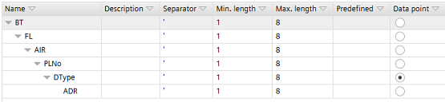
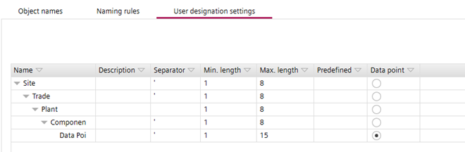
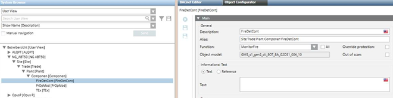

创建特定于项目的用户指定
用户名称由单独的结构项组成，这些结构项定义在Settings > Naming defaults > User designation settings.
User designation settings tab
用户指定可以具有最小和最大字符长度。连续的结构项可以由分隔符定界。一个特定的结构项必须标记为数据点。数据点可以是任何类型的 BACnet 对象。数据点标记将层次结构与数据点特定部分分开的结构项。数据点不一定是定义在用户指定的最后一项Settings > Naming defaults > User designation settings.
User designation settings tab
始终在中定义数据点User designation settings。如果未定义数据点，则无法在User designation任务。
User designation
Create a user designation
- In Settings > Naming defaults > User designation settings, click Add level to create the structure items of your user designation.
- Select the created structure items and enter the project-specific names.
- Click the option button in the Data point column to select which of the structure item will be the data point.
INFO: Do not use the characters : and * for Desigo CC. The Alias field in Desigo CC cannot handle these characters. - You have defined the project-specific user designation settings.

- Go to Advanced > User designation.
- In the User designation view, click Add root.
User designation - Select the created root element and click Add element to add the defined structure items.
- Select a device from the Building structure view.
- The BACnet objects of the selected device are displayed in the I/Os and devices view.
- Drag and drop the BACnet objects to the User designation view on the left.
INFO: You can assign several BACnet objects provided that the objects are children of the same node. - Click Save.
- You have created a project-specific user designation.
User designation defined with space and imported in Desigo CC
ABT 站点中的定义 |
 |
Desigo CC 中的用户视图 |
 |